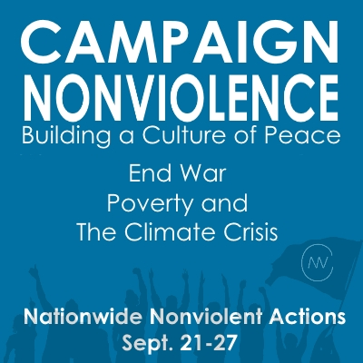
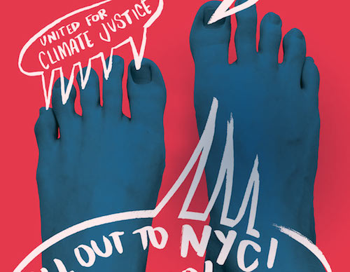
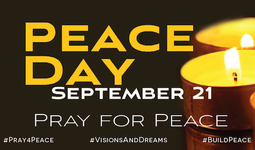
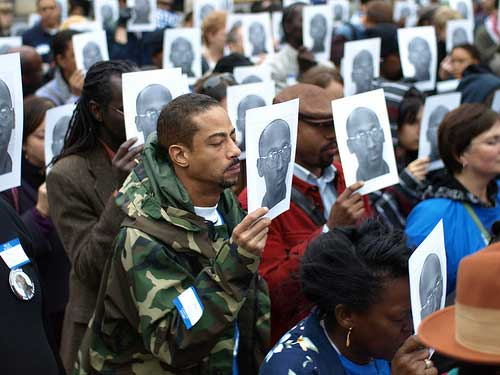

Friends,
Feeling the need to take action for justice and peace through nonviolence this September? We have good news -- there are four fantastic initiatives all happening on Sept. 21!
We encourage you to take a look at Campaign Nonviolence, the People's Climate March, the International Day of Prayer for Peace, and the I Am Troy Davis book club -- all happening this Sept. 21, and all endorsed by FOR.
Campaign Nonviolence from Pace e Bene
Campaign Nonviolence invites you to practice nonviolence toward yourself, toward all others, and toward the world! Through mainstreaming active nonviolence to build a culture of peace, Campaign Nonviolence is joining the enduring struggle to abolish war, end poverty, reverse climate change, and challenge all violence.

In the face of the enormous violence and injustice we face today, the power of active nonviolence is needed now more than ever. This is why Pace e Bene initiated Campaign Nonviolence's week of actions as the launch of a long-term effort to spread active nonviolence.
This new campaign's vision is rooted in an understanding of nonviolence as a force for truth, justice, and the well-being of all that is neither passive nor violent. As Dr. Martin Luther King, Jr. described it, nonviolence is "the love that does justice." It is an orientation that unleashes creativity, connectedness, and compassion. It is a way of life and a means of transforming the world.
Sign the Campaign Nonviolence pledge to join this new movement to mainstream active nonviolence and to foster a world free from war, poverty and the climate crisis. FOR is one of many endorsing organizations.
We encourage you to view Campaign Nonviolence events happening across the country, learn more about the campaign, and check out their comprehensive resources on "mainstreaming nonviolence" for the work you do in your community.
The People's Climate March in NYC and around the world
On Sunday, Sept. 21, much of FOR's national staff will be in New York, taking part in what will be the largest climate march in history.

As we set out in our Demilitarizing Life and Land principles more than three years ago, a key part of our vision for a just and nonviolent world is one in which "Earth's resources sustain life and promote the well-being of all people." Not only does the climate crisis fundamentally threaten our world, its effects have already begun, and are fueling conflict and poverty for people already marginalized by our national and global institutions.
You can learn more about the march and sign up to get updates, find transportation to and housing in New York, and volunteer to help make it happen.
We hope you'll join FOR in New York City -- but this is also a global event. If getting to New York isn't feasible for you, check out some of the other solidarity events happening around the country and world.
International Day of Prayer for Peace
Sept. 21 is Peace Day, also known as the International Day of Prayer for Peace, when thousands of people around the world pray and work for peace. The 2014 theme for the ecumenical Peace Day prayer campaign is "Visions and Dreams of Building Peace."

Plan an event on or near Sept. 21 to seek a vision of how violence can be confronted in your community or our world!
If you're part of a faith community, you might add special prayers for peace in your services that week. If you're part of community peace and justice groups, consider sponsoring local events with a theme of peacebuilding and challenging violence (perhaps connected to the Campaign Nonviolence or People's Climate March projects!).
Past events have included street corner prayers about gun violence, peace pole installations, congregational worship services focused on peacemaking themes, creating childrens' peace murals, and more.
FOR is endorsing this event sponsored by On Earth Peace, along with many peace fellowships and organizations. If you're planning an event, please let On Earth Peace know.
'I Am Troy Davis'
On Sept. 21, 2011, the state of Georgia put Troy Davis to death despite a compelling case of innocence. To mark the three-year anniversary of this travesty of justice, and to deepen and widen the discourse about the human impact of the death penalty system, we invite you to participate in a worldwide community book club between Sept. 21 and Oct. 10, World Day Against the Death Penalty.

The idea behind the community book club initiative is that people who may be uncertain about their views on the death penalty -- and may not want to come to a rally, vigil or other public event -- are more apt to attend a small, private gathering to discuss a book they were asked to read. Through hundreds of intimate gatherings across the country and the world, Troy's story will reach and impact thousands of new people.
I Am Troy Davis, by Jen Marlowe and Troy's sister Martina Davis-Correia, tells his story.
Forming your own "book club" is simple -- just ask your friends and colleagues to read I Am Troy Davis before your event. Then, you can have a free-form discussion, or use Equal Justice USA's discussion questions on the book as a starting point. You can read more hosting tips from the organizers.
Some events have already been scheduled in states across the country, but if you plan your own, please let the organizers know (private events are OK -- they just want to know how many there are).
FOR has endorsed this initiative, and we hope you'll join us as we read this important testimony to justice this fall.
Sept. 21 is a day for active nonviolence
Whether you're educating, marching, praying, reading, or encouraging others to join movements for justice and peace, we're so excited to link arms with you for a day of global actions and for the momentum we'll carry forth from that day! Please share your September 21st stories with us by replying to this message.
In peace and gratitude,
Linda E. Kelly
Director of Communications
Fellowship of Reconciliation
|